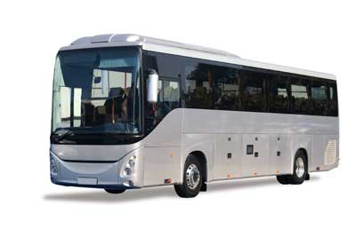

Summer vacationers can save money and lower their contribution to global warming at the same time, thanks to a handy travel transportation guide from the nonprofit Union of Concerned Scientists (UCS).
“A summer vacation can be relatively inexpensive and ‘green’ if you know what to look for,” says UCS senior engineer Jim Kliesch, the primary author of the guide. “We’ve found that with a little bit of planning, consumers can save money with tips that are easier on the planet, too.”
UCS researchers calculated the amount of carbon dioxide - the chief heat-trapping gas that drives global warming - associated with travel in a variety of modes, including passenger cars, SUVs, planes, trains and buses. Based on their findings, here are a number of green transportation strategies to help the budget- and eco-conscious traveler:
Don’t miss the bus. Motor coaches are generally the greenest vacation travel option. Compared with flying coach, a couple traveling on a bus will cut their trip’s carbon dioxide emissions 55 to 75 percent, depending on the distance traveled. Compared with even a fuel-efficient hybrid car, a bus trip would cut a couple’s trip emissions nearly in half. Bus travel is much less expensive than flying and can even be cheaper than driving. Some bus companies offer fares for as low as $1 each way.
Fly coach, not first-class. UCS recommends that travelers who plan to fly opt for coach-class seating when booking their tickets. Because first-class seating takes up more space than coach seating, the average first-class passenger on a domestic flight is responsible for twice as much heat-trapping emissions as someone seated in coach. If traveling alone or with one other person, vacationers are usually better off flying direct in coach than driving a typical vehicle, especially for trips of more than 500 miles.
Trains let travelers skip in-city travel expenses. Train stations are often much closer to city centers than airports, allowing travelers to avoid renting a car or paying for a cab or shuttle into town. Also, trains emit 60 percent less carbon per passenger-mile than a typical car with a single occupant. And, compared with a 500-mile trip on a small jet plane, a train emits roughly 30 percent less carbon.
When driving, take more passengers. More passengers in a car translates to much less pollution per person traveling. That’s because a car uses most of the energy from burning gasoline to move the vehicle itself. Additional passengers and luggage don’t have much of an effect on the amount of energy used when traveling by automobile.
Click to read the full UCS Green Tavel Report: Getting There Greener.
|
 ISTOCKPHOTO According to research by the Union of Concerned Scientists, motor coaches are generally the greenest travel option. |
|
|